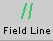
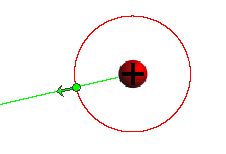

Instructions
This page is designed to get you started using the applet. The applet should be open. The step-by-step instructions on this page are to be done in the applet. You may need to toggle back and forth between instructions and applet if your screen space is limited.
 Field Points and Field
Vectors
Field Points and Field
Vectors
 Field Lines and Equipotential
Lines
Field Lines and Equipotential
Lines
Exercise 1. RESET the applet.
Click somewhere in the applet window. A green dot should appear at the point where you clicked. This is a field point.
Depending on how close the field point is to the source charge (red ball), an arrow representing the electric field vector at the field point will or will not be shown. There will be no arrow if the distance between the field point and the source is so large that the field vector is too small to be noticeable at this scale.
Exercise 2. RESET the applet.
Click somewhere in the applet window, but this time drag the field point around the window before releasing the mouse button. You should be able to observe how the field vector varies in magnitude and direction depending on the location of the field point.
Release the mouse button, and now drag the source. You should again be able to observe changes in magnitude and direction of the field vector at the field point which is now fixed. Note that the applet is designed so that the source object cannot be dragged over a field point. Try it! The reason for this design is given under "2. Field Point Grid" in the Help document on the menu above.
Notice that the field vector is determined by the relative configuration of field point and source. If the field point and source are both shifted by the same amount in the same direction, so that their relative configuration remains unchanged, the field vector remains unchanged as well. Verify this!
Exercise 3. RESET the applet.
Click in the applet window and drag the field point to a position where the arrow representing the field vector just disappears. The Vector Length Multiplier slider should still be at the default setting 1. Move the slider tab to a higher setting. The field vector arrow should become visible and be increasing in length as the slider setting goes to a higher value.
Exercise 4. Without resetting the applet, move the Source Charge slider tab to a different setting from the default setting Q = 25 C. The Charge slider changes the source charge Q. Make sure you include Q = 0 and negative Q in your settings.
The magnitude of the arrow representing the field vector should be proportional to the magnitude of the source charge. The direction of the field vector should be away from the source for positive charge and towards the source for negative charge.
Exercise 5. Without resetting the applet, click again in the applet window so that you get a second field point and field vector. The first field point and field vector will now be shown in grey and the new point and vector in green.
Add a few more field points and vectors, and vary both the Charge slider and Vector Length Scale slider settings. Observe the changes in the field vectors.
Move the source, and observe how the magnitudes of the field vectors increase at the points that the source is approaching and decrease at the other points. Observe how the directions of the field vectors change so that they are always away from or towards the source, depending on whether the source charge is positive or negative, respectively.

RESET the applet.
Exercise 1. Click in the applet window to set a field point, and change the Vector Length Multiplier slider setting if necessary, so that there is a visible field vector.
Click the Field-Line button  to
draw a green field line through the field point, and click
the Equipotential-Line button  to draw a red equipotential line through the
field point. The equipotential "lines" are actually circles
in this case. You should something like the image in Figure 1
below.
to draw a red equipotential line through the
field point. The equipotential "lines" are actually circles
in this case. You should something like the image in Figure 1
below.

Figure 1
Exercise 2. Without resetting the applet, repeat the process from Exercise 1 for two more field points until you have three field points with field lines and equipotential lines through them as illustrated in Figure 2 below.

Figure 2
Exercise 3. Without resetting the applet, add a fourth field point and vector, as in Figure 2 above, and move the field point in two ways:
Observe the direction of the field vector. It should always be along an electric field line and always be perpendicular to an electric potential line.
Exercise 1. RESET the applet.
Select the Field-Grid-Point button  , and drag the
source so that it is centered between four neighboring grid
points. You should see something like the image in Figure 3
below. Adjust the setting of the Vector Length Multiplier
slider if necessary.
, and drag the
source so that it is centered between four neighboring grid
points. You should see something like the image in Figure 3
below. Adjust the setting of the Vector Length Multiplier
slider if necessary.

Figure 3
The grid is an array of grey field points. There are no charges located at these points. The purpose of the grid is to make it easy to observe the electric field due to the source charge at a large number of field points.
Exercise 2. Move the source charge through the grid of field points and observe the changes in the field vectors. As noted above, the applet is designed so that the source object cannot be dragged over a field point.
Click in the applet window to create an additional field point, as shown in Figure 3. You can draw an electric field line and an equipotential line through this point as before. If you move the source or change the value of its charge, these lines will be erased.
Exercise 3. Continue with the state of the applet as
in Exercise 2, and don't click Reset. Instead, click REWIND
 .
This should remove the grid, any extra field points, and any
field and equipotential lines. It should not change the
slider settings and the position of the source charge.
.
This should remove the grid, any extra field points, and any
field and equipotential lines. It should not change the
slider settings and the position of the source charge.